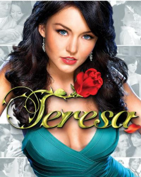

Mi pasatiempo favorito es ver telenovelas. Me encanta seguir las historias llenas de drama, romance y giros inesperados que mantiene la emoción en cada capítulo. Es mi forma favorita de relajarme después de un largo día.

¿Quieres saber más?
Visita nuestra sección de noticias.